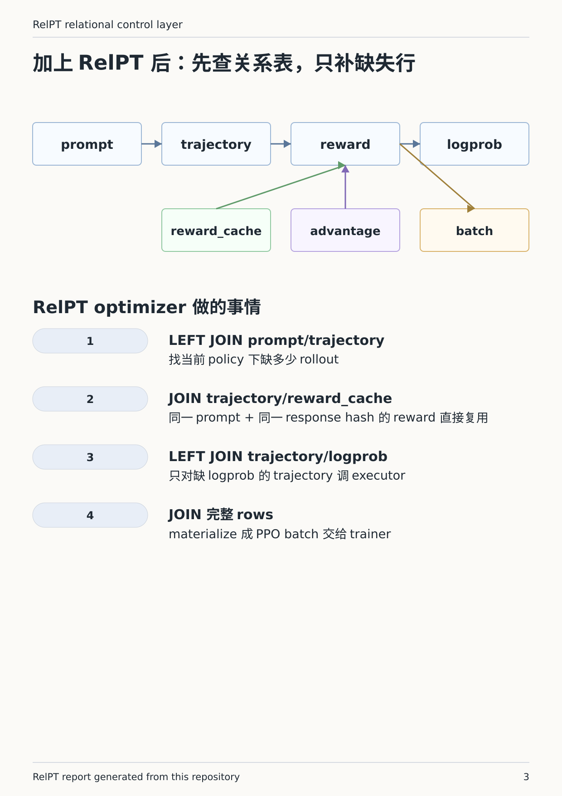
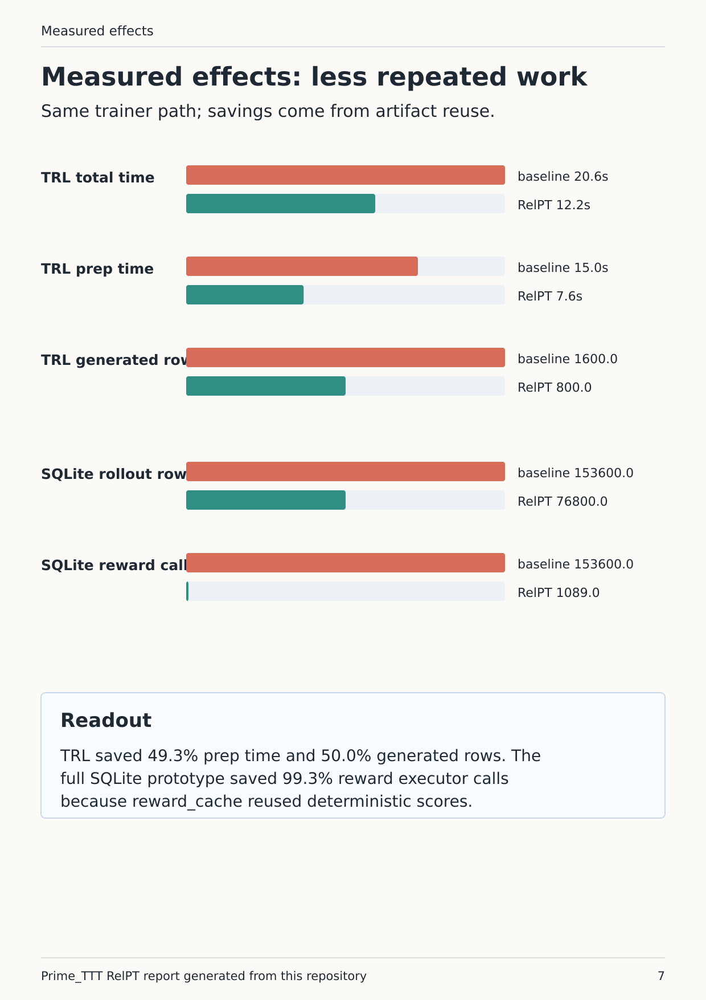
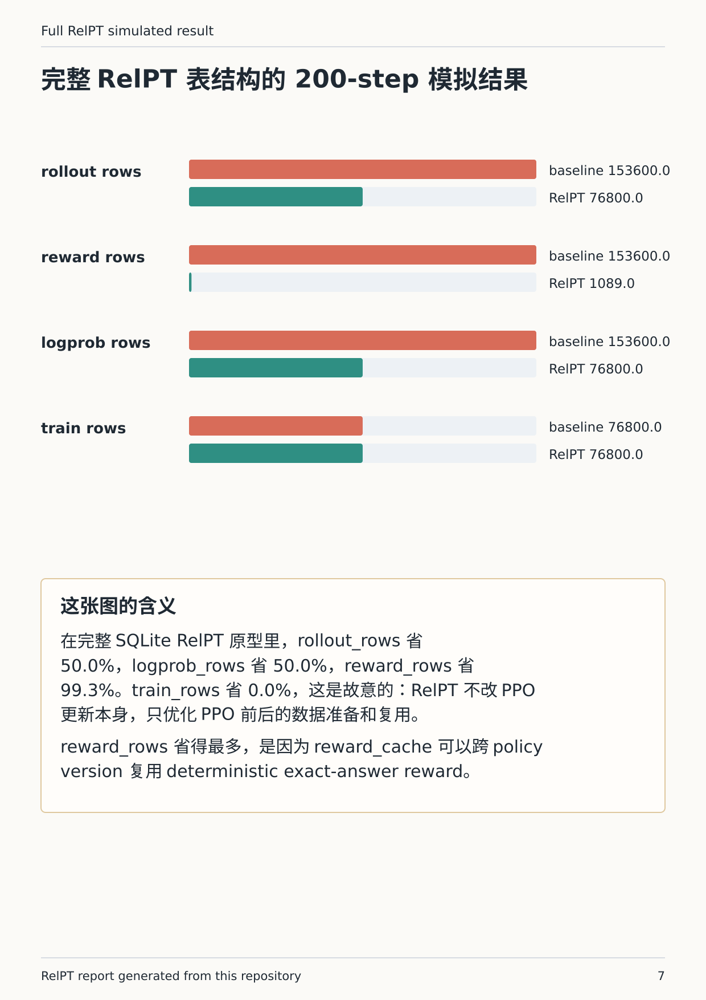

RelPT is the relational planning layer in Prime_TTT. Its target is simple: produce the complete PPO batch relation while minimizing new rollout, reward, logprob, and advantage work.
RelPT does not change PPO loss. It changes how the input artifacts for PPO are constructed.
required PPO rows - existing materialized rows = missing executor work
The optimizer should make the missing work small. The trainer should still see the same query, response, reward, old-logprob, and advantage batch.
A PPO batch row is not a single opaque object. It is a join of artifacts:
| table | example key | why PPO needs it |
|---|---|---|
prompt | prompt_id | query text and dataset metadata |
policy | policy_id | which model version generated or scored the row |
trajectory | traj_id, prompt_id, policy_id | generated response tokens/text |
reward | traj_id, reward_model_id | score used by PPO |
logprob | traj_id, old_policy_id | old-policy probability ratio reference |
advantage | traj_id, policy_id | credit used by the PPO objective |
batch | batch_id, traj_id | materialized membership consumed by PPOTrainer |
The final training relation is the set of rows where these joins are complete. That is why SQL joins are natural here: PPO already requires consistency across these artifacts. RelPT makes the consistency check explicit.

RelPT uses anti-joins: build the required relation, left join existing artifact tables, and keep the rows where the existing side is NULL.
| stage | required relation | existing table | missing output |
|---|---|---|---|
| rollout | prompt x policy x target_K | trajectory | rollout_requests |
| reward | trajectory x reward_model | reward / reward_cache | reward_traj_ids |
| logprob | trajectory x old_policy | logprob | logprob_traj_ids |
| advantage | rewarded trajectory rows | advantage | advantage_traj_ids |
| batch | complete joined rows | batch | materialized PPO batch |
The database optimizer matters because these are physical join/index/materialize questions over growing tables. RelPT supplies the logical artifact graph; SQLite executes the joins and constraints in this prototype.
Suppose the target batch asks for K=6 rollouts per prompt over 96 prompts, but the database already has K=4 usable trajectories for the same policy.
| plan | rollout calls |
|---|---|
| naive | 96 * 6 = 576 |
| RelPT | 96 * (6 - 4) = 192 |
The SQL shape is:
GROUP BY prompt_id, policy_id; existing_k = count(trajectory)
rollout_requests = target_k - existing_k where existing_k < target_k
The same logic applies after rollout. If the new 192 trajectories do not have rewards, the reward anti-join emits only those trajectory ids. If an old trajectory already has a deterministic reward in reward_cache, no reward executor call is needed. If logprobs are missing for the relevant old policy, only those logprob rows are computed.
It works when executor outputs can be represented as durable keyed artifacts: rollout rows, reward rows, logprob rows, advantages, and batches. Once each artifact has stable keys, the question "what should I compute next?" becomes a database completeness query rather than ad hoc Python control flow.
This is also why different tables have different reuse rules:
trajectory reuse is tied to prompt, policy, and rollout requirement.reward_cache can cross policy versions when prompt plus normalized response hash match.logprob is usually policy-specific, so it cannot be blindly reused across policies.advantage is derived from reward/logprob/baseline inputs.batch is a materialized complete join, so exact retries can reuse it directly.sshleifer/tiny-gpt2pyarrow_arrow_cachetrl_ppo_0.11.42004runs/metrics/trl_ppo_relpt_17266929.json| metric | baseline | relpt | saved |
|---|---|---|---|
| total_ms | 20576.0 | 12201.1 | 40.7% |
| prep_ms | 14955.4 | 7580.0 | 49.3% |
| generate_ms | 14887.2 | 7516.4 | 49.5% |
| reward_ms | 68.3 | 40.5 | 40.6% |
| generated_rows | 1600 | 800 | 50.0% |
| reward_rows | 1600 | 800 | 50.0% |

The full SQLite prototype saved 50.0% of rollout rows, 99.3% of reward executor rows, and 50.0% of logprob rows at 200 steps. Training rows were unchanged because RelPT intentionally leaves PPO itself as the same black-box update.

The result supports a systems claim: RelPT can reduce duplicated PPO batch preparation work while keeping the PPO trainer path unchanged. It does not show that sshleifer/tiny-gpt2 learned GSM8K math, because final_eval_reward_delta and mean_train_reward_delta are both 0.0 in this run. The useful signal is executor efficiency: with the same PPOTrainer, the same model, and the same dataset, RelPT reduces generated rows, reward rows, and preparation time.
PDF and HTML copies are generated from docs/generate_relpt_report.py.